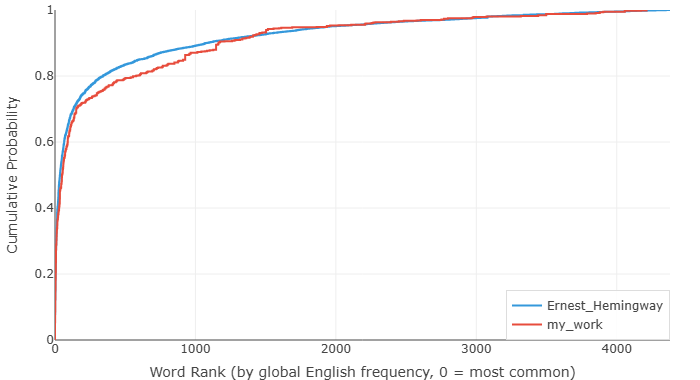

我的英語 vs 海明威 — 一次讓人臉紅的數據自白
上一篇拿海明威和福克納做了個對比，數據漂亮地印證了百年來文學評論的老結論：兩位大師，節奏相反，出自同一個時代。那篇寫得很爽，像坐在看臺上評點兩個諾貝爾獎得主，安全，體面，事不關己。
這篇不一樣。這篇輪到我自己了。
我把當年寫的英語作文扔進了分析器，挨著海明威的數據放。不是覺得自己能跟他比——差了一萬條街——而是想看看到底差在哪。一個母語文學巨人，和一個在中國教室裡學英語的小孩，用數字說話，差距長什麼樣。
先交代背景。我 1995 年出生，用的語料是 2013 年前後寫的，那會兒十七八歲，正上高中，每天吭哧吭哧寫英語作文。都不是什麼創作，全是作業：議論文、讀書報告、「描述一個難忘的暑假」。全世界非英語國家的學生都在寫的那種東西，老師怎麼教，你就怎麼寫。
廢話少說，上圖。
圖一：被教科書醃入味的英語

不用分析，看圖就懂了。我的曲線趴在海明威右邊老遠——我寫的句子，平均比他的長一大截。
等等，這不反了嗎？我一個詞彙量捉襟見肘的老外，不應該寫更短的句子才對？海明威那種英語是母語的人，不是更應該鋪開長句、玩出花來？
還真不是。邏輯是反過來的。
在中國教室裡學英語，你學的壓根不是一門活著的語言，是一套施工圖紙。每句話主語謂語得齊全，動詞得帶賓語，繫動詞不能省，從句引導詞一個不能少。什麼都得寫出來，什麼都不能靠猜。句子跟機器似的，零件少一個就轉不動。
我扒了幾條自己 2013 年寫的，你們感受一下：
"It is widely acknowledged that environmental protection has become an issue of great concern in contemporary society. In my opinion, there are several measures that can be taken to address this problem effectively."
（環境保護是當今社會廣泛關注的問題。在我看來，我們可以採取若干措施來有效應對。）
說實話，語法一點毛病沒有。但讀起來什麼感覺？像一臺收音機在自己播自己。一個真正說英語的人，表達同樣的意思，大概會這樣：
"We need to take care of the planet. Here's what we can do."
（地球得護著點。我們能做的有這些。）
十二個詞對三十二個詞。但不只是字數的問題——一邊是人話，一邊是課文。
再來一條。我當年是這麼寫的：
"It is necessary that we should make every effort to cultivate the habit of reading extensively, for the reason that reading can broaden our horizons and enrich our knowledge."
（廣泛閱讀的習慣應當努力培養，因為閱讀能開闊視野、增長知識。）
換個人來：
"Read more. It opens your mind."
（多讀點書，腦子會變開闊。）
五個詞。五個。我扯了三十個詞想說的事，人家五個詞說完了，還更有勁。
圖表抓到的就是這個。海明威的句子短，不是因為他詞窮，是因為他知道什麼可以不要。"it is widely acknowledged that""in my opinion""for the reason that"——這種腳手架，他一腳踹掉。他信讀者能自己把空白填上。而我呢？一個字都不敢扔，因為我壓根不知道哪些是可以扔的。我沒在咖啡館聽過人用英語聊天，沒在飯桌上聽過人用英語吵架，我對英語的全部認知，來自黑板上的語法拆解。
2013 年的我，根本不知道說英語的人私下是怎麼說話的。像 "Guess I'll head out, then"（「那我先走了啊」）——這句話沒有主語、不用將來時、全靠一個縮略詞和語氣撐著。放到我十八歲的腦子裡，這玩意兒根本不叫句子。句子得有個主語（I）、情態動詞（will）、主動詞（go）、再加個方向（out），少一樣都不踏實。"I will go out then." 七個詞，硬得像塊門板。語法倒是全對，永遠全對。
所以我的句子長。不是因為有那麼多話要說，是因為不知道哪些話可以不寫。
圖二：用不出來的詞

圖一講的是節奏，圖二講的是家底——這張更讓人臉熱。
頭幾百個最常用的英語詞，我用得比海明威少，曲線在他右邊。乍一看像好事：難道我的用詞更高級？不是的。原因很樸素：他跟我不在一個世界裡。海明威寫的是打仗、釣魚、喝酒、鬥牛、談戀愛、面對死亡；我寫的是環境保護和閱讀的重要性。話題不一樣，用的詞自然不一樣。他的高頻詞是從日子裡長出來的，我的是從作文題庫裡扒下來的。
但圖二真正扎心的在後面——中段和尾巴。
你仔細看：我的曲線有一段一段是平的，然後突然往上跳。海明威的線是順順溜溜往上走的，我的卻像樓梯，走一段，卡一下，再跳一格。
平的那段是什麼意思？就是說，這整段頻率範圍內的英語詞，我一個沒用。一整個頻段的詞，在我的作文裡查無此人。曲線就這麼橫著——那些詞要麼我根本不認識，要麼認識但從來沒想過要用，要麼覺得它們「不夠正式」、不配上我的作文。
然後——跳——猛地竄上去一格。這表示我終於碰到了一個我會用、也確實寫了進去的詞。這一跳很可能就是一個詞——就靠這一個詞，撐起了好長一段累積比例。
海明威那種平滑的曲線，說明一件事：人家的詞彙庫是滿倉的。每個頻段都有存貨，沒有沙漠，沒有斷崖。我這種樓梯一樣的曲線呢，就是一個詞彙量又小又不均勻的英語學習者，不打自招 😅。會的詞就那麼一小撮，翻來覆去地用；不會的詞——對不起，跟不存在一樣。
現在比 2013 年好多了。在英語環境裡生活久了，讀的東西雜了，寫東西也沒那麼緊繃了，有些平的地方確實被填上了一些。但要我說那個樓梯已經變坡道了？那是在騙自己。遠遠沒有。英語詞彙是個巨大的城市，我到現在還有大半個城沒逛過，有些街道連路牌都沒認全。
數據這東西
拿自己的作文跟海明威擺在一起，不是一件讓人舒服的事。像被拉到一個光線慘白的大鏡子前面站著，哪裡不對稱、哪裡有坑，全照出來了，躲都躲不掉。
但這也是一種運氣。
2013 年那會兒，我根本不知道自己的英語差在哪。語法沒錯、老師打高分，我就覺得還行。如果當時有這張圖，它會講一個完全不一樣的故事——一個句子都很長、但長得毫無必要的故事；一個詞彙表看著還行、但大半詞壓根沒用過的故事。可惜沒有。我看不到。
現在能看到了。能看到，就能改。
說真的，這個時代的學習條件，好得離譜。書隨便看，Podcast 隨便聽，電影隨便刷，跟母語者嘮嗑也就一個視訊的事。我十七歲那會兒被牆擋在外面、被錢擋在外面的東西，現在全攤在眼前，就差自己伸手去拿。再學不好，真說不過去了。
這麼好的時代，不把英語撿起來，對不起這份運氣。開始吧。